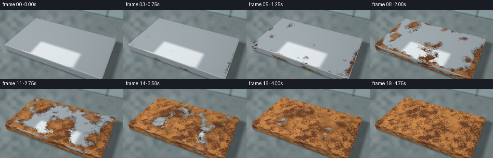
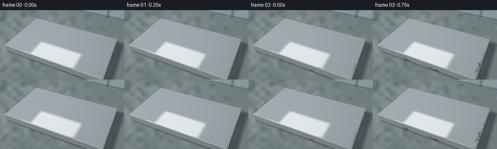
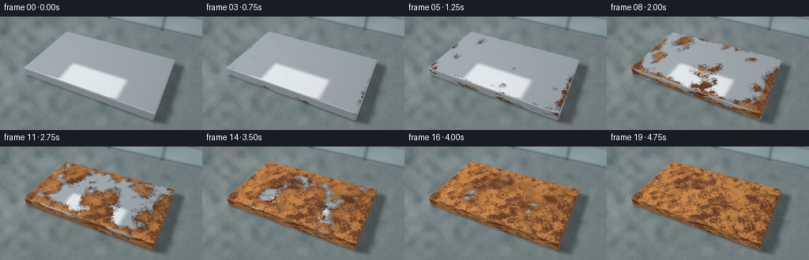
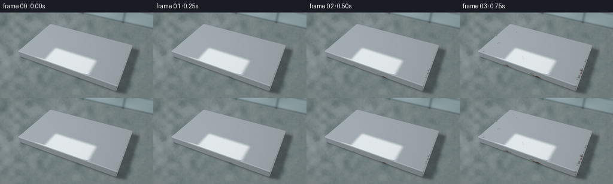

CODING AGENTS AS PIXEL WORLD MODELS
traex/GPT-6.1-Sol · phygen_156
点击播放 · 原生 RGB 像素
逐轮保存的候选
回放视频、检查图与代码变化。
每份候选均可单独播放。实际图片检查记录在下方工具轨迹中。
候选 01播放与检查图
点击播放 · 原生 RGB 像素


展开代码变化
--- 上一保存版本
+++ 本次保存版本
@@ -0,0 +1,286 @@
+"""Procedural, fixed-camera macro timelapse of atmospheric iron corrosion.
+
+All geometry, materials, light, and oxidation textures are generated here.
+"""
+from pathlib import Path
+import json
+import numpy as np
+from PIL import Image
+from scipy.ndimage import gaussian_filter, map_coordinates, zoom
+from scipy.spatial import cKDTree
+import artifact_io
+
+ROOT = Path(__file__).resolve().parent
+SPEC = json.loads((ROOT / 'task_spec.json').read_text())
+SCALE = 3
+W, H = SPEC['width'] * SCALE, SPEC['height'] * SCALE
+RNG = np.random.default_rng(156)
+
+
+def smooth(a, b, x):
+ q = np.clip((x-a)/(b-a), 0, 1)
+ return q*q*(3-2*q)
+
+
+def normalize(v):
+ return v / np.maximum(np.linalg.norm(v, axis=-1, keepdims=True), 1e-8)
+
+
+def noise_field(shape, size, seed):
+ rng = np.random.default_rng(seed)
+ base = rng.normal(size=(size, round(size*shape[1]/shape[0])))
+ yy, xx = np.meshgrid(np.linspace(0,size-1,shape[0]),
+ np.linspace(0,base.shape[1]-1,shape[1]), indexing='ij')
+ out = map_coordinates(base, [yy,xx], order=3, mode='reflect')
+ return (out-out.mean()) / (out.std()+1e-8)
+
+
+def texture(seed):
+ """Surface arrival times and multi-scale, spatially coherent oxide relief."""
+ shape = (768, 1152)
+ y, x = np.meshgrid(np.linspace(-2,2,shape[0]),np.linspace(-3,3,shape[1]),indexing='ij')
+ n0 = noise_field(shape, 6, seed+1)
+ n1 = noise_field(shape, 21, seed+2)
+ n2 = noise_field(shape, 71, seed+3)
+ n3 = noise_field(shape, 230, seed+4)
+ grain = np.random.default_rng(seed+5).normal(0,1,shape)
+ # Independent corrosion nuclei expand, merge, and eventually cover the metal.
+ rng = np.random.default_rng(seed)
+ arrival = np.ones(shape)*3
+ for k in range(42):
+ sx, sy = rng.uniform(-2.85,2.85), rng.uniform(-1.68,1.68)
+ birth = rng.uniform(.045,.46)
+ speed = rng.uniform(1.8,3.4)
+ aspect = rng.uniform(.65,1.45)
+ d = np.sqrt(((x-sx)*aspect)**2+((y-sy)/aspect)**2)
+ arrival = np.minimum(arrival,birth+d/speed)
+ # Edges oxidise somewhat sooner, but the fronts remain irregular.
+ edge = np.minimum(2.7-np.abs(x),1.58-np.abs(y))
+ arrival = np.minimum(arrival,.16 + np.maximum(edge,0)*.58 + .09*n0)
+ arrival += .030*n1 + .020*n2 + .007*n3
+ p0, p1 = np.percentile(arrival,[.1,99.8])
+ arrival = np.clip(.08 + .82*(arrival-p0)/(p1-p0), .035, .94)
+ # Irregular plates form in the thick oxide layer, not on the pristine iron.
+ seeds = rng.uniform([-3,-2],[3,2],size=(1800,2))
+ dist, idx = cKDTree(seeds).query(np.stack([x.ravel(),y.ravel()],axis=1), k=2)
+ cracks = (1-smooth(.002,.016,(dist[:,1]-dist[:,0]))).reshape(shape)
+ cell_tone = rng.uniform(-1,1,len(seeds))[idx[:,0]].reshape(shape)
+ relief = .48*n2+.22*n3+.14*grain+.20*n1 + .18*cell_tone
+ pits = smooth(.95,2.25, -n3-.32*grain)
+ relief -= .9*pits
+ dy, dx = np.gradient(gaussian_filter(relief,.75))
+ # The derivatives are stored in texture-space metre units.
+ dx *= shape[1]/6
+ dy *= shape[0]/4
+ scratches = gaussian_filter(rng.normal(size=shape),(0.35,24))
+ scratches /= scratches.std()
+ return dict(arrival=arrival,n0=n0,n1=n1,n2=n2,n3=n3,grain=grain,
+ cracks=cracks,cell=cell_tone,relief=relief,dx=dx,dy=dy,
+ pits=pits,scratches=scratches)
+
+
+def sdf(p):
+ q = np.abs(p-np.array([0,0,.245]))-np.array([2.64,1.54,.145])
+ return np.linalg.norm(np.maximum(q,0),axis=-1)+np.minimum(q.max(axis=-1),0)-.055
+
+
+def scene_geometry():
+ cam = np.array([3.05,-6.3,6.0])
+ target = np.array([0,0,.22])
+ forward = normalize(target-cam)
+ right = normalize(np.cross(forward,[0,0,1]))
+ up = np.cross(right,forward)
+ xx, yy = np.meshgrid((np.arange(W)+.5)/W*2-1, 1-(np.arange(H)+.5)/H*2)
+ fov = np.tan(np.deg2rad(42)/2)
+ rays = normalize(forward+xx[...,None]*fov*right+yy[...,None]*fov*H/W*up)
+ floor_t = -cam[2]/rays[...,2]
+ floor = cam+rays*floor_t[...,None]
+ # Sphere tracing a rounded solid gives real bevels and a consistent silhouette.
+ t = np.full((H,W),3.5)
+ hit = np.zeros((H,W),bool)
+ for _ in range(95):
+ p = cam+rays*t[...,None]
+ d = sdf(p)
+ hit |= (d < .0003) & (t<floor_t)
+ live = (~hit)&(t<floor_t)
+ if not live.any():
+ break
+ t += np.where(live,np.maximum(d,.00012),0)
+ p = cam+rays*t[...,None]
+ eps = .001
+ normal = normalize(np.stack([sdf(p+np.eye(3)[k]*eps)-sdf(p-np.eye(3)[k]*eps)
+ for k in range(3)],axis=-1))
+ return cam, rays, floor, p, normal, hit
+
+
+def sample_tex(tex, p, normal):
+ # Planar projections keep the visible front and end faces textured, too.
+ u = p[...,0].copy()
+ v = p[...,1].copy()
+ front = np.abs(normal[...,1]) > .70
+ end = np.abs(normal[...,0]) > .70
+ v = np.where(front,-1.5+(p[...,2]-.245)*3,v)
+ u = np.where(end,p[...,1]*1.45,u)
+ v = np.where(end,1.50+(p[...,2]-.245)*3,v)
+ h,w = tex['arrival'].shape
+ coords = [(v+2)/4*(h-1),(u+3)/6*(w-1)]
+ return {key:map_coordinates(val,coords,order=1,mode='nearest') for key,val in tex.items()}
+
+
+def floor_and_wall(cam, rays, floor):
+ x,y = floor[...,0],floor[...,1]
+ broad = noise_field((H,W),16,709)
+ medium = noise_field((H,W),90,710)
+ small = RNG.normal(0,1,(H,W))
+ base = np.zeros((H,W,3))+np.array([.19,.235,.239])
+ base += (broad*.022+medium*.011+small*.006)[...,None]
+ # Wet charcoal workbench, with diffuse puddles and subdued window reflections.
+ moisture = smooth(-.7,.5,broad+medium*.2)
+ base *= (1-.15*moisture)[...,None]
+ reflection = np.exp(-((x+2.8)/2.8)**2-((y-.3)/4.5)**2)
+ base += (reflection*.080*moisture)[...,None]*np.array([.79,.92,1])
+ # Broad area-light contact shadow, cast away from the upper-left light.
+ shadow = np.zeros((H,W))
+ for dx in [-.85,0,.85]:
+ for dy in [-.7,0,.7]:
+ light = np.array([-3.8+dx,-3.2+dy,7.0])
+ d = light-floor
+ inv = 1/np.where(np.abs(d)<1e-7,1e-7,d)
+ a = (np.array([-2.70,-1.60,.045])-floor)*inv
+ b = (np.array([2.70,1.60,.445])-floor)*inv
+ ent = np.minimum(a,b).max(axis=-1)
+ ext = np.maximum(a,b).min(axis=-1)
+ shadow += ((ext>np.maximum(ent,0)) & (ent<1))/9
+ shadow = gaussian_filter(shadow,3)
+ base *= (1-.60*shadow)[...,None]
+ # A heavily defocused damp window beyond the table establishes humidity.
+ tw = (4.5-cam[1])/rays[...,1]
+ wp = cam+rays*tw[...,None]
+ wallmask = (tw>0)&(wp[...,2]>.0)&(tw<(-cam[2]/rays[...,2]))
+ wx,wz=wp[...,0],wp[...,2]
+ wall = np.zeros_like(base)+np.array([.25,.335,.349])
+ wall += (noise_field((H,W),8,799)*.018)[...,None]
+ frame = np.exp(-((wx+1.65)/.090)**2)+np.exp(-((wx-1.50)/.09)**2)
+ frame += np.exp(-((wz-1.1)/.055)**2)
+ wall *= (1-.50*np.clip(frame,0,1))[...,None]
+ wall += (.06*np.exp(-((wx+3)/3)**2))[...,None]*np.array([.75,.92,1])
+ ledge = np.exp(-((wz-.10)/.07)**2)
+ wall *= (1-.65*ledge)[...,None]
+ base = np.where(wallmask[...,None],wall,base)
+ base = gaussian_filter(base,(2.8,2.8,0))
+ return base
+
+
+def render():
+ tex = texture(3501)
+ cam,rays,floor,p,n,mask = scene_geometry()
+ fields = sample_tex(tex,p,n)
+ background = floor_and_wall(cam,rays,floor)
+ print('Object bounding box:', np.where(mask)[1].min()/SCALE,
+ np.where(mask)[0].min()/SCALE,np.where(mask)[1].max()/SCALE,
+ np.where(mask)[0].max()/SCALE,flush=True)
+ light = normalize(np.array([-3.8,-3.2,7])-p)
+ view = -rays
+ halfv = normalize(light+view)
+ # Stable condensation droplets in the early years; they lose their sharp
+ # reflections as porous rust consumes the smooth metal beneath them.
+ drops = []
+ drng = np.random.default_rng(381)
+ for k in range(28):
+ drops.append((drng.uniform(-2.48,2.48),drng.uniform(-1.35,1.35),
+ drng.uniform(.018,.055),drng.uniform(.03,.2)))
+ films = []
+ for i in range(SPEC['frames']):
+ time = i/(SPEC['frames']-1)
+ age = time-fields['arrival']
+ coat = smooth(-.018,.025,age)
+ old = smooth(.015,.29,age)
+ thick = smooth(.12,.55,age)
+ # Fine pitting, oxide-scale normal changes, and the loss of reflectivity.
+ rough_amount = .00055*coat+.0017*old+.0018*thick
+ normal = n.copy()
+ tx = fields['dx']*rough_amount
+ ty = fields['dy']*rough_amount
+ top = np.clip(n[...,2],0,1)
+ normal[...,0] -= tx*top
+ normal[...,1] -= ty*top
+ normal[...,2] += (tx+ty)*(.5*(1-top))
+ normal=normalize(normal)
+ ndl=np.clip(np.sum(normal*light,axis=-1),0,1)
+ ndv=np.clip(np.sum(normal*view,axis=-1),0,1)
+ # Smooth brushed iron: cool-toned, bright softbox reflected in the top.
+ reflected=2*np.sum(normal*view,axis=-1)[...,None]*normal-view
+ zt=(6-p[...,2])/np.maximum(reflected[...,2],1e-5)
+ refpos=p+reflected*zt[...,None]
+ softness=.25+1.6*old
+ window=(smooth(-5.1-softness,-5.1+softness,refpos[...,0]) *
+ (1-smooth(-.4-softness,-.4+softness,refpos[...,0])) *
+ smooth(-4.5-softness,-4.5+softness,refpos[...,1]) *
+ (1-smooth(5.3-softness,5.3+softness,refpos[...,1])))
+ window *= reflected[...,2]>0
+ metal=np.zeros((H,W,3))+np.array([.32,.365,.39])
+ metal *= (.45+.72*ndl)[...,None]
+ metal += (window*.40)[...,None]*np.array([1.02,1.02,1])
+ metal += ((1-ndv)**3*.23)[...,None]*np.array([.75,.90,1.0])
+ metal += (fields['scratches']*.004+fields['grain']*.002)[...,None]
+ # Nonuniform orange ochre over a deep brown oxide substrate.
+ colorfield = .47*fields['n1']+.34*fields['n2']+.22*fields['n0']
+ orange = smooth(-1.2,.9,colorfield)
+ dark=np.array([.155,.056,.025])
+ bright=np.array([.55,.229,.066])
+ oxide=dark[None,None,:]*(1-orange[...,None])+bright[None,None,:]*orange[...,None]
+ oxide += (fields['grain']*.018+fields['cell']*.018*thick)[...,None]*np.array([1,.55,.22])
+ # Newly formed thin oxide is dark, becoming rough and ochre with age.
+ oxide *= (.58+.42*old)[...,None]
+ oxide *= (.50+.79*ndl)[...,None]
+ crack_strength=fields['cracks']*.54*thick
+ oxide *= (1-crack_strength-fields['pits']*.38*old)[...,None]
+ oxide += (np.clip(np.sum(normal*halfv,axis=-1),0,1)**20*.035)[...,None]*np.array([1,.76,.5])
+ # A tarnish halo precedes the growth front, keeping the chemical change
+ # visibly local rather than a global dissolve to an orange photograph.
+ halo=smooth(-.09,-.026,age)*(1-coat)
+ metal *= (1-halo*.42)[...,None]
+ metal=metal*(1-(halo*.18)[...,None])+np.array([.17,.10,.06])*(halo*.18)[...,None]
+ object_color=metal*(1-coat[...,None])+oxide*coat[...,None]
+ # Upper edge catches the soft daylight, later becoming granular brown.
+ bevel=(1-top)*np.clip(n[...,2],0,1)*4
+ object_color += (bevel*.11*(1-coat*.88))[...,None]*np.array([.91,.98,1])
+ for sx,sy,r,birth in drops:
+ radius=r*(.67+.33*np.sin(time*13+sx)**2)*smooth(birth-.06,birth+.10,time)
+ d=np.sqrt((p[...,0]-sx)**2+(p[...,1]-sy)**2)/max(radius,.0001)
+ wet=(1-smooth(.83,1.05,d))*top**12*(1-old)*smooth(.0,.15,time)
+ if not np.any(wet>.01):
+ continue
+ highlight=np.exp(-(((p[...,0]-sx+radius*.31)/(radius*.22))**2+
+ ((p[...,1]-sy+radius*.26)/(radius*.20))**2))
+ ring=np.exp(-((d-.84)/.15)**2)
+ object_color *= (1-wet*.14)[...,None]
+ object_color += (wet*(highlight*.48+ring*.055))[...,None]*np.array([.84,.95,1])
+ image=np.where(mask[...,None],object_color,background)
+ # A few dark shed grains gather beside the unchanged, corroding solid.
+ if time>.5:
+ for j in range(25):
+ rgen=np.random.default_rng(1010+j)
+ sx=rgen.uniform(-2.65,2.7)
+ sy=-1.64-rgen.uniform(.02,.22)
+ rad=rgen.uniform(.007,.018)
+ speck=1-smooth(rad*.55,rad,np.sqrt((floor[...,0]-sx)**2+(floor[...,1]-sy)**2))
+ speck *= smooth(.48+j*.014,.65+j*.014,time)*(~mask)
+ image=image*(1-speck[...,None])+np.array([.13,.055,.024])*speck[...,None]
+ # Optical vignette and mild filmic transfer, fixed throughout the shot.
+ yy,xx=np.mgrid[0:H,0:W]
+ vig=1-.14*((xx-W*.51)/(W*.72))**2-.13*((yy-H*.48)/(H*.9))**2
+ image=np.clip(image*vig[...,None],0,1)
+ # Linear radiance to display RGB.
+ image=np.where(image<=.0031308,image*12.92,1.055*image**(1/2.4)-.055)
+ rgb=(np.clip(image,0,1)*255+.5).astype(np.uint8)
+ rgb=np.array(Image.fromarray(rgb).resize((SPEC['width'],SPEC['height']),Image.Resampling.LANCZOS))
+ films.append(rgb)
+ print(f'frame {i:02d}: rust coverage {coat[mask].mean():.3f}',flush=True)
+ frames=np.stack(films)
+ artifact_io.save(frames,ROOT)
+ print('Saved',frames.shape,flush=True)
+
+
+if __name__=='__main__':
+ render()
候选 02播放与检查图
点击播放 · 原生 RGB 像素


展开代码变化
--- 上一保存版本
+++ 本次保存版本
@@ -86,12 +86,12 @@
def scene_geometry():
cam = np.array([3.05,-6.3,6.0])
- target = np.array([0,0,.22])
+ target = np.array([0,0,-.10])
forward = normalize(target-cam)
right = normalize(np.cross(forward,[0,0,1]))
up = np.cross(right,forward)
xx, yy = np.meshgrid((np.arange(W)+.5)/W*2-1, 1-(np.arange(H)+.5)/H*2)
- fov = np.tan(np.deg2rad(42)/2)
+ fov = np.tan(np.deg2rad(50)/2)
rays = normalize(forward+xx[...,None]*fov*right+yy[...,None]*fov*H/W*up)
floor_t = -cam[2]/rays[...,2]
floor = cam+rays*floor_t[...,None]
可观测工具轨迹
实际执行的命令与返回图片。
命令 1exit 0
/bin/bash -lc 'ls -la && cat prompt.txt && cat GENERATION_RULES.md && cat task_spec.json'
命令 2exit 0
/bin/bash -lc "cat artifact_io.py && python - <<'PY' import importlib.util for a in ['numpy','PIL','scipy']: print(a, bool(importlib.util.find_spec(a))) PY"
命令 3exit 0
/bin/bash -lc 'OPENBLAS_NUM_THREADS=1 OMP_NUM_THREADS=1 python generate.py'
命令 4exit 0
/bin/bash -lc "python - <<'PY' import numpy as np cam=np.array([3.05,-6.3,6.0]); f=np.array([0,0,.22])-cam; f/=np.linalg.norm(f); r=np.cross(f,[0,0,1]); r/=np.linalg.norm(r); u=np.cross(r,f) p=np.array([[x,y,z] for x in [-2.70,2.70] for y in [-1.60,1.60] for z in [.045,.445]])-cam for angle in [42,46.5,48]: k=np.tan(np.deg2rad(angle)/2) x=(1+(p@r)/(p@f)/k)*128 y=(1-(p@u)/(p@f)/k*(256/144))*72 print(angle,'bbox',x.min(),x.max(),y.min(),y.max()) PY"
命令 5exit 0
/bin/bash -lc "python - <<'PY' import numpy as np c=np.array([3.05,-6.3,6.]); p=np.array([[x,y,z] for x in [-2.7,2.7] for y in [-1.6,1.6] for z in [.045,.445]])-c for tz in [0,-.15]: f=np.array([0,0,tz])-c; f/=np.linalg.norm(f); r=np.cross(f,[0,0,1]);r/=np.linalg.norm(r);u=np.cross(r,f); k=np.tan(np.deg2rad(48)/2) y=(1-(p@u)/(p@f)/k*256/144)*72 print(tz,y.min(),y.max()) PY"
命令 6exit 0
/bin/bash -lc 'command -v ffmpeg || true'
命令 7exit 0
/bin/bash -lc 'OPENBLAS_NUM_THREADS=1 OMP_NUM_THREADS=1 python generate.py'
命令 8exit 0
/bin/bash -lc "python - <<'PY'
from pathlib import Path
import numpy as np
from PIL import Image
p=np.load('pixels.npz')['pixels']
assert p.shape==(144,256,20)
f=sorted(Path('frames').glob('*.png'))
assert len(f)==20
assert all(Image.open(x).mode=='RGB' and Image.open(x).size==(256,144) for x in f)
assert Path('index.html').is_file() and Path('inspection.png').is_file()
print('Verified: 20 RGB frames, 256Ã144; packed artifact and video player present.')
print('Output files:', ', '.join(x.name for x in Path('.').iterdir() if x.is_file()))
PY"保存候选 2 份；完成命令 8 次；可验证图片返回 0 张。原始 API 响应与完整日志保留在本地。